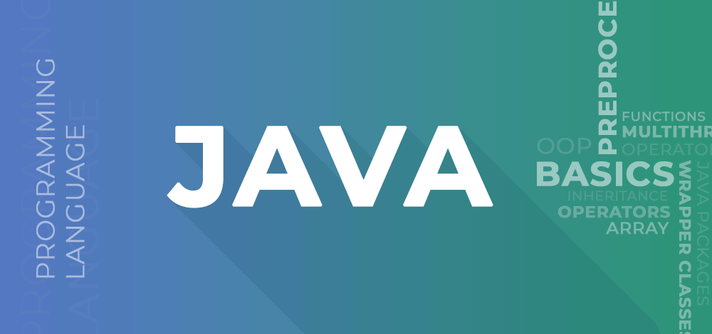

Java
This Java Tutorial is designed for beginners as well as experienced professionals. Whether you’re looking to learn the basics of Java or its advanced concepts, this free Java tutorial is the perfect resource for you.
What is Java
Developed by Sun Microsystems in 1995, Java is a highly popular, object-oriented programming language. This platform independent programming language is utilized for Android development, web development, artificial intelligence, cloud applications, and much more.
In this tutorial, we will cover everything from the basics of Java syntax to advanced topics like object-oriented programming and exception handling. So, by the end of this tutorial, you will have a strong understanding of Java and be ready to start writing your own Java applications. So let’s get started on this comprehensive Java programming tutorial!

Features of Java
Java is one of the most populat and widely used programming languages
- Java has been one of the most popular programming languages for many years.
- Java is Object Oriented. However, it is not considered as pure object-oriented as it provides support for primitive data types (like int, char, etc)
- The Java codes are first compiled into byte code (machine-independent code). Then the byte code runs on Java Virtual Machine (JVM) regardless of the underlying architecture.
- When compared with C++, Java codes are generally more maintainable because Java does not allow many things which may lead to bad/inefficient programming if used incorrectly. For example, non-primitives are always references in Java. So we cannot pass large objects (like we can do in C++) to functions, we always pass references in Java. One more example, since there are no pointers, bad memory access is also not possible.
- When compared with Python, Java kind of fits between C++ and Python. The programs are written in Java typically run faster than corresponding Python programs and slower than C++. Like C++, Java does static type checking, but Python does not
Applications of Java
The application or uses of Java are:
- Mobile Application
- Desktop GUI application
- Artificial Intelligence
- Scientific applications
- Cloud applications
- Embedded systems
- Gaming Applications
Learn more about Java by clicking on the links below :